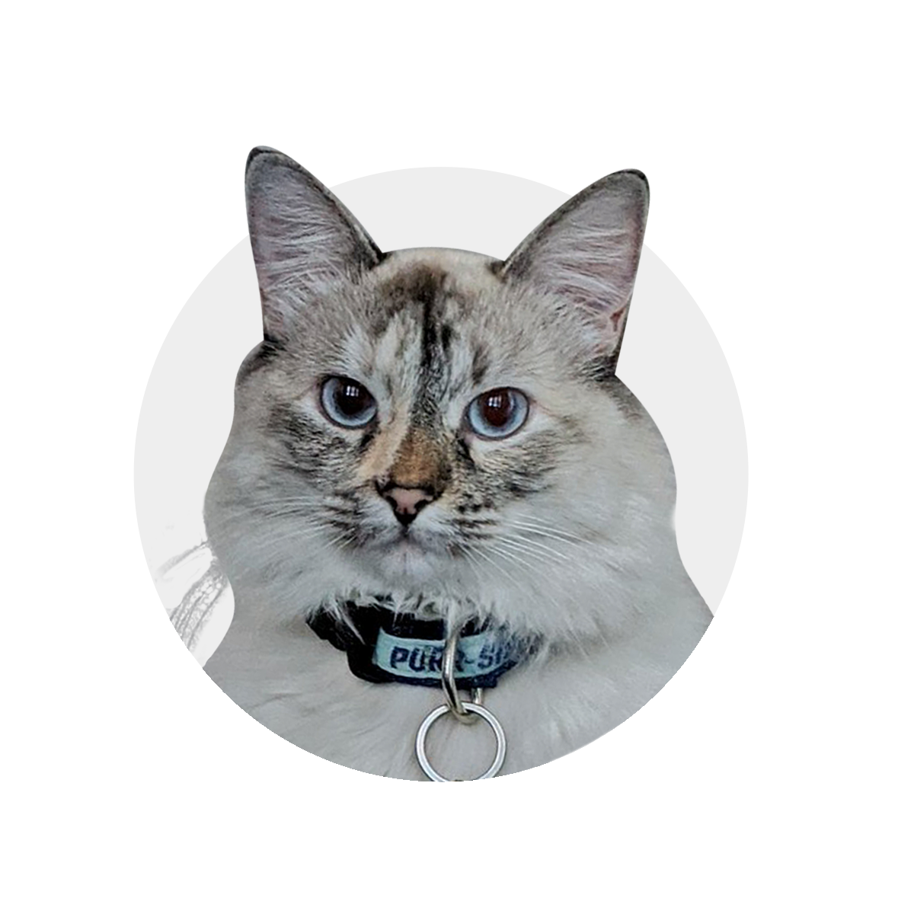

I am an award-winning designer, leader, and strategist, with a unique bent for research-driven work with a high level of design quality and polish. I am passionate about
inclusion, accessibility, and keeping tech human (and human-focused).
Right now I'm a Founding Lead Designer at [redacted]. More soon!
Previously I was a Staff
Designer at Shopify, working on the
Polaris design system. I was the Design Director for
Elizabeth Warren for President, a Lead Product Designer at
The New York Times, and a Staff Designer at Pivotal Labs, now VMWare Tanzu.
See the full breadth of my experience on my LinkedIn.
Also I speak on
topics including accessibility & inclusion, politics, and design ethics, and I love to moderate panels. I have spoken at places like Design System University, PluralSightLIVE, QTBIPOC Design, Out in Tech, Lesbians Who Tech, O’Reilly Design, LCAD,
NYU Startup School, and The University of Texas at Austin. I also give talks to
individual product teams including at Mailchimp, Spotify, and IBM. I
love comics, travel, and
my cat.
Work with me I provide creative
consulting and speaking. I’m also taking on illustration and comics work.
(Reach out if you want to chat!)